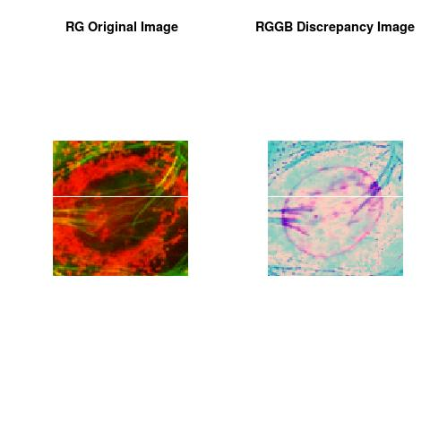
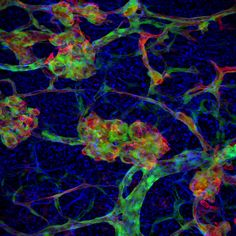

Motivation:
Fluorescence imaging is the visualization of fluorescent dyes or proteins as labels for molecular processes or structures. It enables a wide range of experimental observations including the location and dynamics of gene expression, protein expression and molecular interactions in cells and tissues. Known technologies are Tissue Microarrays (used in the field of modern pathology) and Imaging Flow Cytometry(combining the speed and sample size of flow cytometry with the resolution and sensitivity of microscopy).For instance, fluorescence imaging is used in cancer diagnosis to find/subtype/stage a tumor or a molecular abnormality in a biopsy. It is often advantageous to consider only a cropping sample from the fluorescence image(processed biopsy) and to assess:
-
How different are some regions of interest from the rest?
This Discrepancy Image assesses how colors are spatially distributed in the regions of interest of an image, i.e. able to recover the spatial color distribution where the individual regions of interest are either clumped or scarce in the space of colors of the sampled image.
The Discrepancy Image is a companion to the primary fluorescence image that provides further quantification (on measurement quality too) of the scarcity & abundance and distribution of the fluorescence contents in specified regions of interest(ROIs).
Discrepancy Learning Process
Our first framework in data content detection using the framework of the discrepancy analytics is reformulated as an image content analytics framework to assess the question.We use the mathematical framework of discrepancy to establish a data-image structure analysis. Essentially, discrepancy gives a global indication about the non-uniformity of the distribution of RGB colors in the image. The usage of the mathematical framework of discrepancy provides a discrepancy learning process for image analytics that is able to give insights about RGB colors distribution of the pixels and to allow access to many levels of information about image content. This discrepancy learning process is simple to numerically implement without assuming any parametric form in the data. The results showed that this discrepancy learning process captured the reflected pattern in the image with more insights about the colors spatial distribution where the pixel colors are either clumped or scarce. The captured pattern by the discrepancy learning process is called Discrepancy Channel.
Numerical Discrepancy Scanners Using Deep Discrepancy Learning Process
The implementation of the algorithm using the known programming languages ( Java,C++,C#, R) is very straightforward. One way to describe a digital color image is to declare its contents using picture element(pixel) position and their associated channels.
Let's assume a RGB colors, each image pixel is represented by 3 coordinates, Red Channel, Green Channel, Blue Channel. Our Discrepancy Learning Process provides the forth channel called Discrepancy Channel, see images below.
The Discrepancy Channel is considered as an holistic histogram for the considered channels in the high content image data, it allows the interpreter to objectively identify the image content levels:
-
Dark Grey is meaning that the color of the pixel is scarce in the image content.
-
White Grey is meaning that the color of the pixel is dominating in the image content.
The Discrepancy Image is formed by the Discrepancy Learning Process as:
-
1-) Considering (Red Channel, Green Channel). The obtained channel is called Discrepancy Channel RG.
-
2-) Considering (Green Channel, Blue Channel). The obtained channel is called Discrepancy Channel GB.
-
3-) Considering (Red Channel , Blue Channel ). The obtained channel is called Discrepancy Channel RB.
-
The Discrepancy Images are the images formed by (Discrepancy Channel RG, Discrepancy Channel GB, Discrepancy Channel RB).






For an application to ordinary images, click this for more, Using Deep Discrepancy Learning Process.


Note
The theoretical part of this work was done when the author was in his PhD thesis (1994-1998), at the University of Savoie, Department of Mathematics, France. The work was shaped toward real applications accordingly to the learned scientific experience.
This essay is mainly for Fluorescence Imaging Analysis and Discrepancy Images with application to Tissue Micro-Arrays (used in the field of modern pathology) and Imaging Flow Cytometry (combining the speed and sample size of flow cytometry with the resolution and sensitivity of microscopy).
Author scientific profile:
Statistics and Applied Mathematics for Data Analytics, Identify opportunities to apply Mathematical Statistics, Numerical Methods, Machine Learning and Pattern Recognition to investigate and implement solutions to the field of Data Content Analytics. Data prediction via computational methods to predict from massive amounts of data (Big Data Content). These methods included clustering, regression, survival analysis, neural network, classification , ranking, deep discrepancy learning .
Author: Faysal.El.Khettabi@gmail.com
The MIT License (MIT) Copyright 1994-2017, Faysal El Khettabi, Numerics&Analytics, All Rights Reserved.
Dark Grey is meaning that the color of the pixel is scarce in the image content.
White Grey is meaning that the color of the pixel is dominating in the image content.
1-) Considering (Red Channel, Green Channel). The obtained channel is called Discrepancy Channel RG.
2-) Considering (Green Channel, Blue Channel). The obtained channel is called Discrepancy Channel GB.
3-) Considering (Red Channel , Blue Channel ). The obtained channel is called Discrepancy Channel RB.
The Discrepancy Images are the images formed by (Discrepancy Channel RG, Discrepancy Channel GB, Discrepancy Channel RB).
The MIT License (MIT) Copyright 1994-2017, Faysal El Khettabi, Numerics&Analytics, All Rights Reserved.